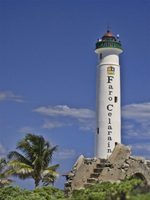

Tours
History of Cozumel Island
Tourists from far away places have been coming to Cozumel for a long time. Centuries before the Spanish landed in 1518, during the height of the Maya civilization, Cozumel was an important trading center and a place of pilgrimage. Maya women from the mainland came to worship Ix Chel, the wife of the Sun God Itzamna and the Goddess of Fertility, to whom the island’s temples were dedicated. In 1519, Cortez arrived and destroyed many of the Maya temples. By 1570, small pox and other European diseases had reduced the island’s population from a pre-Hispanic estimate of 40,000 to no more than 300. By 1600 the island was reportedly abandoned. In 1848 the island began to be resettled by refugees from the “War of the Castes”, a Mayan uprising in the Yucatan against the central Mexican government. By 1970, the population had grown to 10,000.Today, most of Cozumel’s 50,000 residents live in the town of San Miguel located on the western side of the island. Much of the town’s social and business activity is focused on the central town square or Plaza del Sol.
6 Popular Visit Site
Palancar Reef
One of the best spots to dive is the Palancar Reef, rising from depths of up to 80 meters to shallows just beneath the surface of the sea at the southwest end of the island.
Location: part of Arrecifes de Cozumel National Park
Chankanaab Beach Adventure Park
The lagoon is now part of an adventure park surrounding it, called Chankanaab Beach Adventure Park, where guests can enjoy activities including a sea-lion show, a dolphin swim experience, and a crocodile exhibition. Other fun things to do include ziplining and treetop climbing, as well as a visit to an authentic Mayan home to sample traditional foods.
Location: Carretera Costera Sur Km. 9, Zona Hotelera Nte., 77600 San Miguel de Cozumel
Punta Sur Eco Beach Park
A fun place to explore the diversity of Cozumel's coastline and experience its flora and fauna, the Punta Sur Eco Beach Park is the largest eco park on the island. Punta Sur provides plenty of great swimming and beach fun, as well as a chance to enjoy some snorkeling, scuba diving, and kayaking. Part of the 240-plus-acre Parque Punta Sur, it's home to a diversity of beaches, reefs, and lagoons, as well as a forested area with plenty of walking trails.
Location: Autopista Km. 30 Sur Matamoros Norte-Centro-Sur, Guaycura, San Miguel de Cozumel
Museum of the Island of Cozumel
In the heart of San Miguel de Cozumel, the excellent Museum of the Island of Cozumel (Museo de la Isla de Cozumel) makes for a fun break from the beach. The museum offers a great deal of information related to the history of the island and its people, from its formation millions of years ago to its current status as one of the Caribbean's most visited tourist destinations.
Location: Av. Rafael E. Melgar 321, Centro, 77600 San Miguel de Cozumel
Faro De Celarain:
Cozumel's lighthouse

The best known of Cozumel's lighthouses is Celarain (Faro de Celarain), 30 kilometers south of the capital of San Miguel. Built in 1901 and recently fully restored with the addition of an interesting maritime museum in the old lighthouse keeper's home, the lighthouse is perched at the southernmost tip of the island in the nature reserve known as Parque Punta Sur and is worth the visit and the climb of its 134 steps for its wonderful views over the Caribbean Sea.
Location: Carr. Costera 17782, Quintana Roo
Discover Mexico Park Cozumel
Particularly popular among cruise ship passengers during their Cozumel stopover, Discover Mexico Park Cozumel is one of the newest attractions on the island. In addition to providing an interesting overview of Mexico's many diverse cultures, highlights include miniature reconstructions of many of the country's most important archaeological sites and historic attractions.
Location: Carretera Costera Sur Km 5.5, Zona Hotelera Nte., 77600 San Miguel de Cozumel